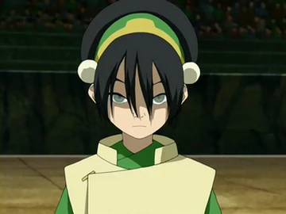
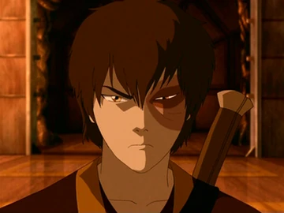
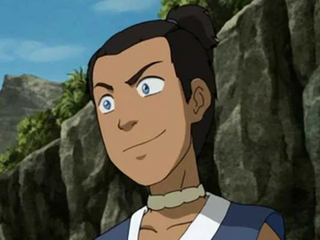

-

Aang
Es el protagonista de la serie y el Avatar, maestro de los cuatro elementos. Su origen proviene de los nómadas del Aire, concretamente del Templo del Aire del Sur.
Nómadas del Aire
-

Toph Beifong
Es un personaje principal que hizo su primera aparición en el Libro Dos: Tierra. Toph es una maestra de la Tierra Control y una de las más poderosas de su tiempo, a pesar de su ceguera.
Reino Tierra
-

Zuko
Es un personaje principal que fue un antagonista del Libro Uno: Agua, Libro Dos: Tierra y eventualmente un aliado en Libro Tres: Fuego como miembro del Equipo Avatar. Es un Maestro del Fuego Control proveniente de la Familia Real de la Nación del Fuego, nacido como el Príncipe heredero.
Nación del Fuego
-

Sokka
Es guerrero adolescente de la Tribu Agua del Sur y uno de los protagonistas de la serie. Tras la muerte de su madre y después de que su padre se marchara junto con todos los demás hombres adultos de su tribu para luchar en la Guerra de los Cien Años, Sokka fue criado por su abuela, Kanna, junto a su hermana menor Katara.
Tribu Agua
-

Katara
Es un personaje principal. Es una maestra agua, nacida y criada en la Tribu Agua del Sur por su abuela, Kanna, junto a su hermano mayor Sokka. Es la hija menor del Jefe Hakoda y Kya. Katara junto a Sokka, encontró a al Avatar Aang encerrado en un iceberg por más de 100 años.
Tribu Agua